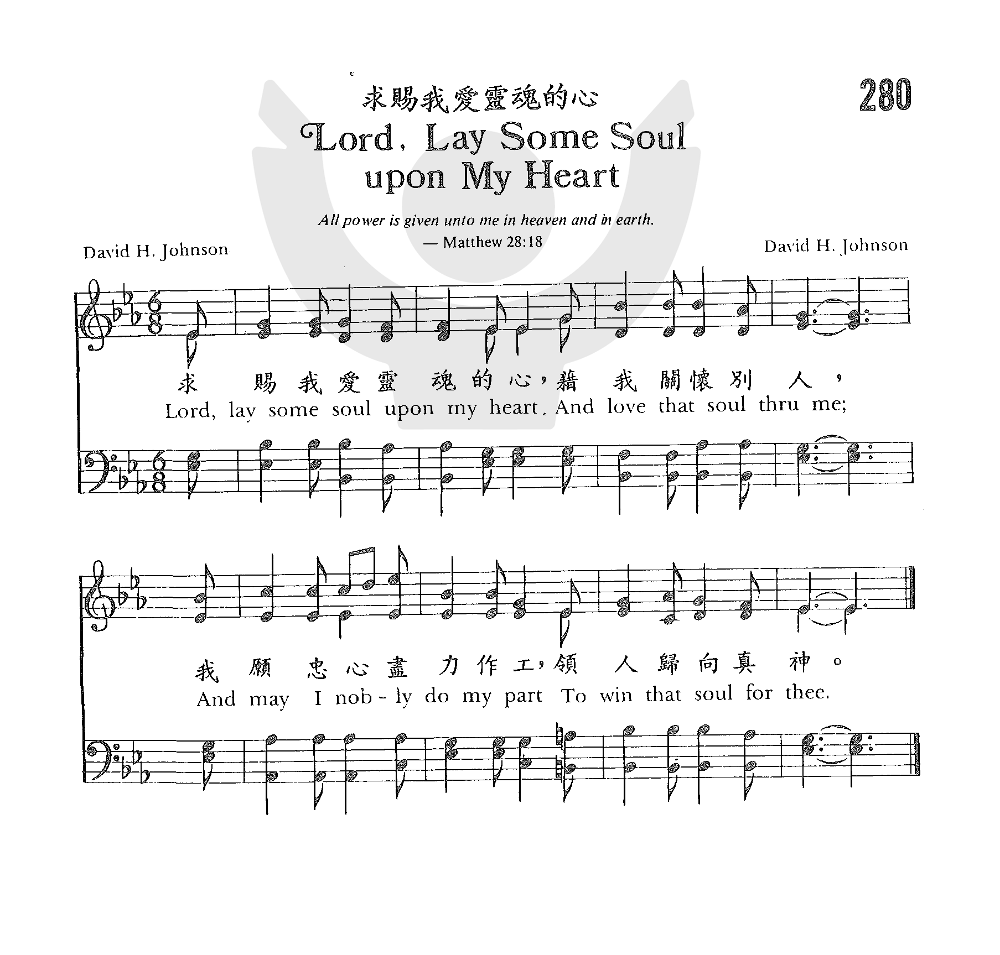

1238
Lord Lay Some Soul Unto My Heart
_Sankey
求赐我爱灵魂的心
|
|
颂主新歌
469领一灵魂归神 |
|
Lord, lay some soul upon my heart,
And love that soul through me;
And may I bravely do my part
To win that soul for Thee.
Some soul for Thee, some soul for Thee,
This is my earnest plea;
Help me each day, on life’s highway,
To win some soul for Thee.
2
Lord, lead me to some soul in sin,
And grant that I may be
Endued with power and love to win
That soul, dear Lord, for Thee.
3
To win that soul for Thee, my Lord,
Will be my constant prayer;
That when I’ve won Thy full reward
I’ll with that dear one share.
https://www.hymnal.net/en/hymn/h/932 |
1.求主的灵常感动我，藉我关注灵魂；
使我忠勇勤劳工作，领一灵魂归神。
领一灵魂归向恩主，是我热切恳祈；
天天助我生活路程，领那灵魂归你。
2.求主助我领他离罪，赐我力能胜任，
赋予爱心，能力充沛，领一灵魂归神。
领一灵魂归向恩主，是我热切恳祈；
天天助我生活路程，领那灵魂归你。
3.惟愿引那灵魂离祸，是我切祷常念，
当我到达荣耀宝座，见那灵魂在天。
领一灵魂归向恩主，是我热切恳祈；
天天助我生活路程，领那灵魂归你。 |
|
https://www.zanmeishige.com/tab/25648.html?songbook=1&index=280

|
|
|
|
 求賜我愛靈魂的心
Lord, Lay Some Soul upon My Heart
求賜我愛靈魂的心
Lord, Lay Some Soul upon My Heart
-
1238
Lord Lay Some Soul Unto My Heart
求赐我爱灵魂的心
Tune Information
|
Title: |
IRA (Sankey) |
|
Composer: |
Ira David Sankey |
|
Meter: |
8.6.8.6 |
|
Incipit: |
13332 21135 55435 |
|
Key: |
E♭ Major |
|
Copyright: |
Public Domain |

Words: anonymous (see note below)
Music: Ira David Sankey (b. Aug. 28, 1840; d. Aug. 13, 1908)
Links:
Wordwise Hymns (none)
The Cyber Hymnal (Ira Sankey)
Hymnary.org
Note: Apparently the tune was written by Ira Sankey, the soloist and song leader
for evangelist Dwight Moody. Most hymn books list the words as anonymous. A few
attribute at least the first stanza to a Dr. Leon Tucker, of whom we know
nothing. Hymnary.org gives the author as Frank Garlock (1930-___) on the basis
of one hymnal, and in another place says it’s B. B. McKinney (1886-1952), or
maybe Tucker–illustrative of the uncertainty!
Our hearts pump life-sustaining blood through our bodies day and night. We
couldn’t get along without them. But there are people who are described as
“heartless “in another sense. At the very least that speaks of someone who is
unsympathetic and probably too self-centred. In the extreme, it describes a
person who is callous, harsh, and cruel.
Consider the opposite. What do we mean when we say a person has put his whole
heart into some activity or project? It describes an individual who is
passionate and enthusiastic about what he’s doing. And it suggests the
deliberate taking on of a burden or responsibility, with a willingness to pay
the price necessary to succeed.
A heartfelt investment in service for God was symbolized by the attire of the
Levitical high priest in the Old Testament. He wore a breastplate inset with
precious stones, each representing one of the twelve tribes of Israel. “So Aaron
[the first high priest] shall bear the names of the sons of Israel…over his
heart, when he goes into the holy place [to commune with God]” (Exod. 28:29). On
his two shoulders he also had stones set in gold, each engraved with the names
of six of the tribes (vs. 11-12).
This is a beautiful picture, pointing to both the heart and the labour of
service for the Lord. The one who was to represent the people before the Lord
bore them on his heart, in loving concern, and carried them on his shoulders to
support them in their need. That is what we want from today from our pastors,
and other servants of the Lord at work in the church of Christ. It should be
evident in every Christian’s life and service too. We should put our heart and
strength into it!
There are other examples in the Bible of a full-hearted involvement. One is
Moses’ instruction about what his hearers should do with the messages he passed
on from the Lord: “You shall lay up these words of mine in your heart” (Deut.
11:18). That rings with a similar summons as the words of the psalmist in Psalm
119:
“Blessed are those who keep His testimonies, who seek Him with the whole
heart!…With my whole heart I have sought You!” (vs. 2, 10). “Your word have I
hidden in my heart” (vs. 11).
In the New Testament, the Apostle Paul speaks often of the heart in his
epistles. “Whatever you do, do it heartily, as to the Lord and not to men” (Col.
3:23). And, in Christian service, “Let us not grow weary while doing good, for
in due season we shall reap if we do not lose heart” (Gal. 6:9).
But it was his passion, as a converted Jew, to see his own people won to Christ
that especially moved him.
“I tell the truth in Christ, I am not lying, my conscience also bearing me
witness in the Holy Spirit, that I have great sorrow and continual grief in my
heart, for…my brethren” (Rom. 9:1-3). “My heart’s desire and prayer to God for
Israel is that they may be saved” (Rom. 10:1).
The enormity of his burden for them is reflected in his statement that, if it
were possible, he was even willing to be cut off from Christ himself, if it
would see them won to the Saviour (Rom. 9:3).
That heart concern for the salvation of others is reflected in a little song for
which we do not know the author. The song says:
1) Lord, lay some soul upon my heart,
And love that soul through me;
And may I faithfully do my part
To win that soul for Thee.
3) Lord, may I love, as You have loved
The souls of those I know;
And grant me power from heav’n above
Thy love for them to show.
Questions:
1) Is there someone in your life, or someone you have heard of for whose
salvation you are burdened?
2) What are you doing about this burden of heart?
Links:
Wordwise Hymns (none)
The Cyber Hymnal (Ira Sankey)
Hymnary.org
https://wordwisehymns.com/2016/06/17/lord-lay-some-soul-upon-my-heart/
愛我們的天父，我們感謝讚美你，謝謝你在創世之先就已揀選我們，在我們未出母腹你就認識我們。你又為我們預備了救恩，就是借著你兒子耶穌基督脫離罪的詛咒，得以進入永恆。主啊，今天我們若忽視你的救恩，真是有禍了。主啊，我們不能不去傳福音，專顧自己得救，我們應當分享這大好的消息，盼願萬民歸主做主門徒！
主啊，我們知道耶穌基督第二次再來的日子，越來越近了，我們在這有限的年日�堙A要愛惜光陰，明白主的旨意如何，並要警醒不倦，預備見主容面！不能忘記的是：還要竭力傳福音。主啊，求你賜我們一顆愛靈魂的心，讓我們熱衷傳福音給身邊的人。主啊，我們不單單只停留在言語上來傳遞你的福音，更重要的是用行動來活出基督的生命，讓眾人看到我們的好行為都歸榮耀給天父。
今天的我們，常懶散於傳福音，面對陌生人更是難以啟齒，不知從何談起。主啊，幫助我們，賜給我們殷勤和智慧，勇敢的見證你的聖名。主啊，每當看到那未曾認識你，而活在虛空、痛苦、絕望中的人們，我們的心很痛，我們願意有更多人認識你，能脫離世界的枷鎖，得以有永恆的盼望！主啊，懇求你借著我們來揀選他們，願救恩臨到他們。
保羅先輩為我們做了榜樣，他曾為了福音，幾乎喪命，仍立定心志傳講基督。還教導我們：「無論得時不得時，都要傳福音」。主啊，傳福音不只是宣教士該做的，而是每個基督徒都當要做的，雖然你早已預定得救與不得救的人，可是我們仍然要努力傳福音。主啊，你的心意是人人悔改，不願一人沉淪。因此，我們不再沉迷世界的享樂里，願意起來去付代價和精力傳福音，先從身邊的人開始。願你賜福和帶領，聽我們的禱告，是奉耶穌的名祈求，阿們！
https://kknews.cc/zh-hk/news/9mnv8vj.html